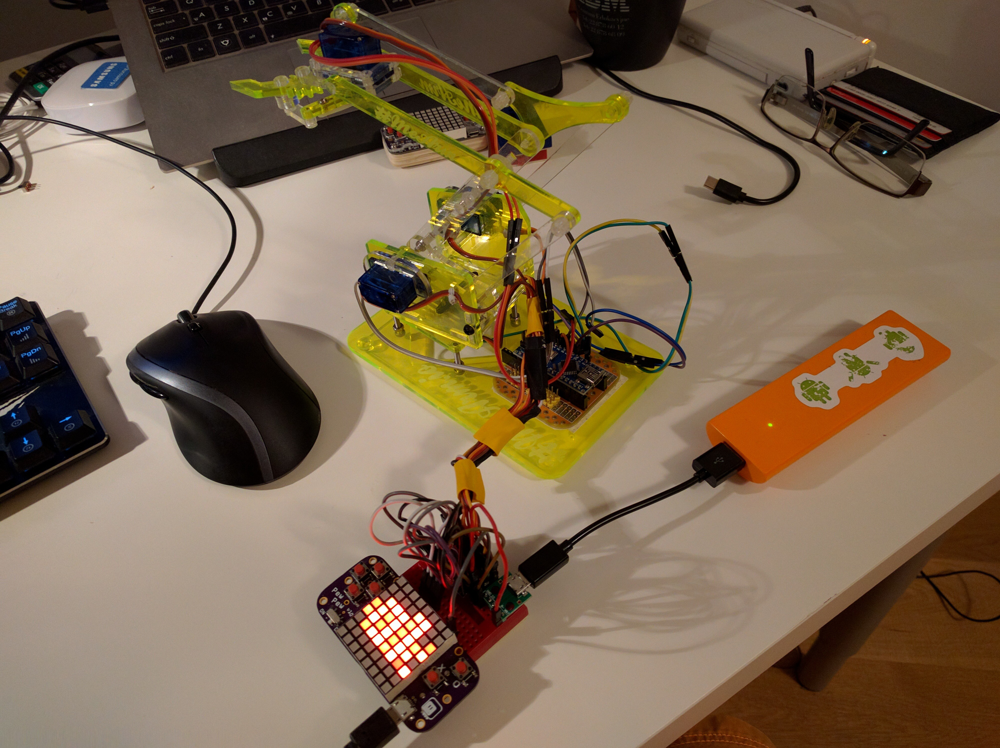

Controlling a Robot¶
Published on 2018-09-13 in PewPew Standalone.
The Maker Faire Zürich is coming, and I need to show something. Sure, I could just let people play some games, but it’s always cool to have something moving. Last year I had the Deltabot controlled with D1 Mini X-Pad Shield , this time I decided to use the PewPew to control a project-181 .
The connections are rather simple, even if there is a lot of them — every servo gets its own GPIO pin, and power from the powerbank. Tested the servo movements with the REPL, and it all seems to be working fine. Now I need to write some simple code to control them with the buttons, and maybe to display some status on the display…